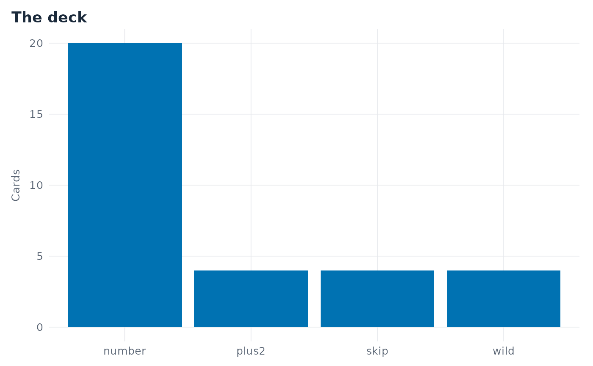

The theme every mm_plot_*() function draws in: a light look with one faint
rule per axis break and none between them, a clear typographic hierarchy,
facet strips in the suite accent, and no legend. Add it to a ggplot of your
own to match the package's figures.
Examples
deck <- mm_build_deck()
ggplot2::ggplot(deck, ggplot2::aes(x = type)) +
ggplot2::geom_bar(fill = "#0072B2") +
ggplot2::labs(title = "The deck", x = NULL, y = "Cards") +
mm_theme()
